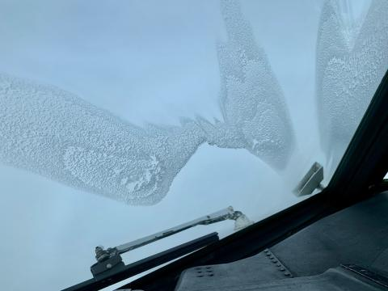
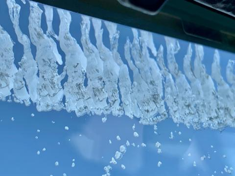

Research
I analyze collocated remote sensing and in situ observations to better understand cloud microphysical properties in midlatitude winter storms. Here, I give an overview of some of the research I've worked on, past and present.
Ph.D. Dissertation Research
Leveraging Probabilistic Frameworks to Investigate Cloud Microphysical Properties in Midlatitude Winter Storms: Ice Crystal Habit Identification and Supercooled Liquid Water Detection
University of Washington · Ph.D. in Atmospheric and Climate Science
Winter storms contain complex mixtures of ice crystal habits and cloud phases that can vary substantially within a single radar or lidar sample volume. Despite this particle heterogeneity, most current hydrometeor classification algorithms adopt a deterministic approach, assigning a single particle type or phase to each remote sensing observation. My dissertation explores how probabilistic frameworks can be used to address and better represent this microphysical heterogeneity. Using coordinated airborne observations collected during NASA's IMPACTS field campaign, I focus on two complementary problems: identifying distributions of ice crystal habits from radar and lidar observations and estimating the probability of supercooled liquid water occurrence using remote sensing observations.

Part I · Ice Crystal Habit Identification
Radar and lidar measurements provide complementary information about the size, shape, and orientation of ice particles, making them useful for constraining ice crystal type in clouds. I am developing temperature-dependent lookup tables that relate airborne W-band linear depolarization ratio and 1064-nm lidar depolarization ratio measurements to area-weighted probabilistic distributions of six ice crystal habit categories observed in situ: plate, column, rosette, aggregate, spherical, and irregular. The lidar–radar framework is built from matched observations across 55 coordinated flight legs, representing approximately 20 flight hours and 19 winter storms , while a complementary radar-only framework draws from 101 coordinated flight legs spanning 21 storms .
Why is this useful? These lookup tables provide a probabilistic representation of the ice crystal populations within a remote sensing sample volume, with potential applications for understanding cloud radiative properties and improving microphysical remote sensing retrievals.
Manuscript currently in preparation for submission to Atmospheric Measurement Techniques.
Part II · Supercooled Liquid Water Detection
Future work. Supercooled liquid water (SLW) plays an important role in mixed-phase cloud processes, precipitation growth, and aircraft icing, yet its spatial distribution within winter storms can be difficult to identify. The second part of my dissertation will explore the use of remote sensing observations to probabilistically characterize SLW occurrence within winter storm clouds.

